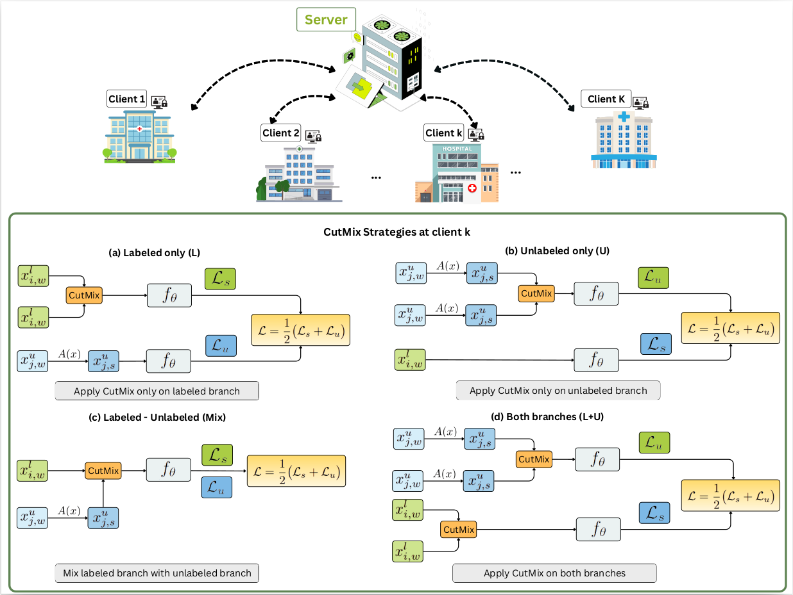

Research Assistant
Department of Computing Fundamental
FPT University
Office: Room LB23, FPT University, Ho Chi Minh Campus, D1 Street, Saigon Hi-tech Park, Long Thanh My Ward, Thu Duc City, Ho Chi Minh City, 71216
Email: shuileese170336@gmail.com
Short Bio
I'm currently on the job market. Please reach out if you think I would be a good fit. Thank you!
I am currently working as a research assistant fellow with Sup. Dang Ngoc Minh Duc at FPT University.
My research centers on the intersection of artificial intelligence and healthcare, with a particular emphasis on medical image analysis. I aim to advance the robustness, efficiency, generalizability, reliability, and privacy of machine learning models in real-world clinical settings. Recently, my focus has been on federated learning and semi-supervised learning frameworks for medical image segmentation, aiming to enable privacy-preserving, data-efficient, and trustworthy AI systems. Through this line of work, I seek to bridge methodological innovation and healthcare impact, promoting the practical deployment of AI technologies in medical research and clinical workflows.
News
Publications
* denotes the co-first author and † denotes the corresponding author.

Federated Semi-Supervised FixMatch: Enhancing CutMix for Medical Image Segmentation. Thu Thuy Le†, Nhut Minh Nguyen, Nhat Truong Pham, Phuong-Nam Tran, Nguyen Doan Hieu Nguyen, Phuong Luu Vo, Balachandran Manavalan, Duc Ngoc Minh Dang .
2025 IEEE International Conference on Big Data, (IEEE BigData 2025), 2025.
[paper] [code]
Heterogeneous Personalized Federated Learning by Local-Global Updates Mixing via Convergence Rate. Meirui Jiang, Anjie Le, Xiaoxiao Li, Qi Dou.
International Conference on Learning Representations 2024, (ICLR), 2024.
[paper] [code]
Client-Level Differential Privacy via Adaptive Intermediary in Federated Medical Imaging. Meirui Jiang, Yuan Zhong, Anjie Le, Xiaoxiao Li, Qi Dou.
Medical Image Computing and Computer Assisted Interventions 2023, (MICCAI), 2023.
[paper] [code]
Talks & Presentations
Harmonizing Local and Global Drifts in Federated Learning on Heterogeneous Medical Images.
at AI Drive, Mar 2022. [Video (Bilibili, in Chinese)]
Robust and Reliable Federated Learning for Heterogeneous Medical Images.
Champion in MICCAI Federated Tumor Segmentation Challenge Task 2, 2021.
Third Place in MICCAI Federated Tumor Segmentation Challenge Task 1, 2021.
Hong Kong PhD Fellowship Scheme (HKPFS), 2020.
Outstading Graduate of Shandong Province, 2020.
MICCAI Undergraduate Student Travel Award, 2019.
Champion in MICCAI Endoscopic Vision Challenge on Surgical Robotics Phase Recognition Task, 2019.
Second Place in MICCAI Endoscopic Vision Challenge on Surgical Instrument Recognition Task, 2019.
National Scholarship, from the ministry of Education of China, 2019,2018,2017.
President Scholarship, highest honor from Shandong Univ. (25 awardees per year), 2019.
BaoSteel Excellent Students Award (4 awardees in Shandong Univ. and 500 in China per year), 2019.
Miscellaneous
Professional Activities
Conference Service:
Organization Committee, Domain Adaptation and Representation Transfer (DART), MICCAI 2023 Workshop.
Program Committee, Medical Imaging Meets NeurIPS (Med-NeurIPS), NeurIPS 2021 & 2022 Workshop.
Program Committee, Interpretable Machine Learning in Healthcare (IMLH), ICML 2021 & 2022 Workshop.
Program Committee, Distributed And Collaborative Learning (DCL), MICCAI 2021 & 2022 Workshop.
Volunteer, Medical Imaging Meets NeurIPS (Med-NeurIPS), NeurIPS 2021 & 2022 Workshop.
Conference Reviews:
International Symposium on Biomedical Imaging (ISBI), 2025.
International Conference on Artificial Intelligence and Statistics (AISTATS), 2025.
International Conference on Machine Learning (ICML), 2024, 2025.
International Conference on Learning Representations (ICLR), 2024, 2025.
Conference on Neural Information Processing Systems (NeurIPS), 2023, 2024, 2025.
IEEE/CVF Conference on Computer Vision and Pattern Recognition (CVPR) 2022, 2023, 2024, 2025.
IEEE/CVF International Conference on Computer Vision (ICCV) 2023, 2025.
European Conference on Computer Vision (ECCV) 2022, 2024.
AAAI Conference on Artificial Intelligence (AAAI), 2024, 2025.
International Conference on Medical Image Computing and Computer-Assisted Intervention (MICCAI) 2022, 2023, 2024.
IEEE/CVF Winter Conference on Applications of Computer Vision (WACV) 2022.
Asian Conference on Computer Vision (ACCV) 2024.
Journal Reviews:
IEEE Transactions on Neural Networks and Learning Systems (TNNLS).
IEEE Transactions on Medical Imaging (TMI).
Medical Image Analysis (MedIA).
International Journal of Computer Vision (IJCV).
Pattern Recognition.
IEEE Journal of Biomedical and Health Informatics (JBHI).
IEEE Transactions on Big Data (TBD).
Medical Physics.
Human-Centric Intelligent Systems.